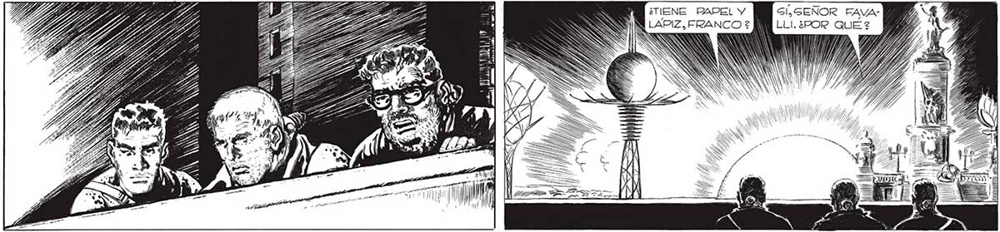
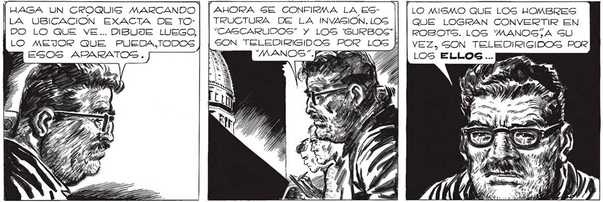
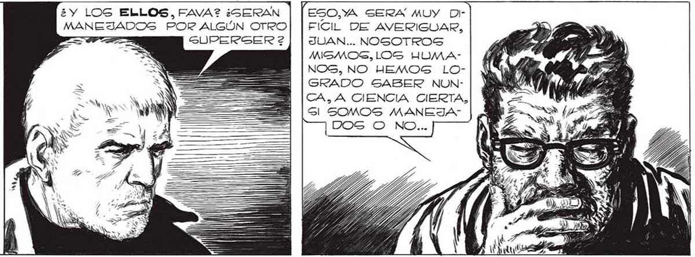

¿TIENE PAPEL Y Gl, SEÑOR FAVA- 3 267 LAPIZ, FRANCO ? LLI.¿POR QUE 2 Ñ WA Ñ XA 4 SANA SK Y nr Ñ RE HH) | 477% FAZ pra HAGA UN CROQUIS MARCANDO | | AHORA SE CONFIRMA LA ES- LO MISMO QUE LOS HOMBRES LA UBICACION EXACTA DE TO- TRUCTURA DE LA INVASION. LOS QUE LOGRAN CONVERTIR EN ¡DO LO QUE VE... DIBUJE LUEGO,| | “CASCARUDOS” Y LOS 'SURBOG"|| | ROSOTS. LOS 'MANOG,A SU LO MEJOR QUE PUEDA,TODOS GON TELEDIRIGIDOS POR LOS Á | vez, SON TELEDIRI "MANOS". a | Los ELLOS... DESOE EGSA CÚPULA, LOS ELLOS DIRIGEN TODO... ALLl GE HA DE CENTRALIZAR TODA LA INFORMACION QUE LOS “MANOS” RECIBEN DE “CASCARUDOS” Y HOMBRES RS Y, ESO,YA SERA MUY DiFICIL DE AVERIGUAR, JUAN... NOSOTROS MAIGMOS, LOS HUIMANOS, NO HEMOS LOGRADO SABER NUNCA, A CIENCIA CIERTA, Sl SOMOS MANEJA ¿Y LOS ELLOS, FAVA? ¿GERAN MANEJADOS POR ALGÚN OTRO Con FANTAS- E 3 GUPERSER 2 TICO DESPLIE- S GUE DE TONALIDADES IRIGADAS » LA cú: PULA SEGUIA DILATANDOGE Y CONTRAYENDOSE, COMO UN CORAZON ENORME ... ÍÚCON ESO QUIERES DECIR PERO... ¡MIRA!


